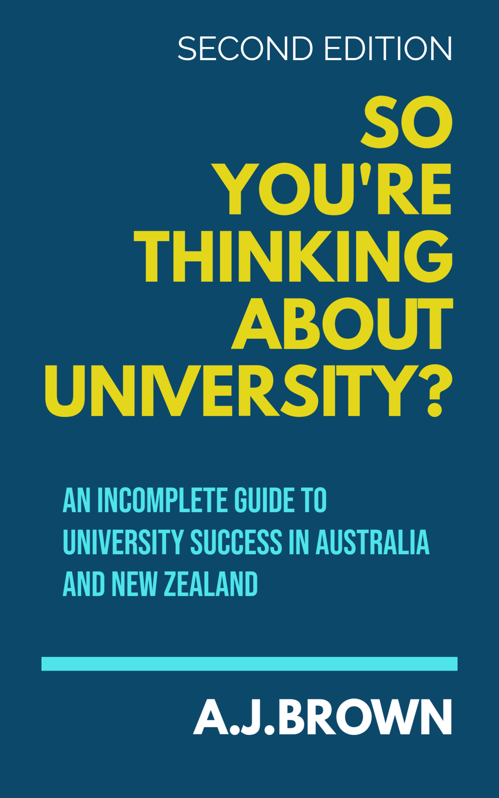

So You're Thinking About University?
Thinking about heading to university? This book contains numerous tips to ensure your time at university is a success. Unlike some other study guides that are mostly based on personal opinion, this book utilises verified research and data. It also provides detailed information specific to the Australian and New Zealand university environment. Cut through the university marketing hype, and get the unvarnished truth about how to maximise the value of your time at university. Of course any book of this nature is not going to be able to include every relevant piece of information, hence it is referred to as an incomplete guide.
This book has detailed coverage of topics including:
- How university differs from highschool and how to adjust to the new environment as painlessly as possible.
- The best strategy for choosing a degree and a university.
- Which popular degrees might not be worth studying after all.
- Proven study techniques that maximise results.
- How to get the most out of lectures.
- Ways in which students sabotage themselves through academic misconduct and how to defend yourself against unjust allegations.
- Methods for researching essays and a shortcut method if you are in a hurry.
- Effective time management strategies.
- Techniques for overcoming procrastination.
- Effective navigation of group projects.
- Making friends and getting along with other students.
- The extent to which university prestige matters.
Buy book on Amazon Australia
Below is the table of contents, along with some sample chapters. If the book is of interest, please purchase it on Amazon.
UPDATE: Thanks to the people who have purchased my book. After careful consideration, I decided to make all chapters available online. Hopefully you will find them useful.
Table of Contents
- Introduction (Read Online)
- I: Beginning University Life
- II: Choosing a Degree and University
- III: Popular Degrees That Might Not Be As Good an Idea As They Seem
- IV: Surviving Lectures
- V: Study Techniques
- VI: Working With Other Students
- VII: Organising Your Life
- VIII: Completing Assignments
- IX: Social Aspects of University
- X: When Things Go Wrong
- XI: Practical day to day living
